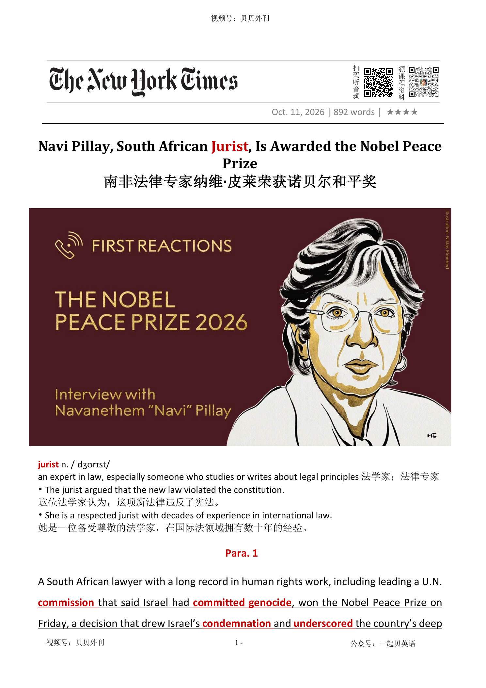

02 HEADLINE / 标题中英文解释
Navi Pillay, South African Jurist, Is Awarded the Nobel Peace Prize
南非法律专家纳维·皮莱荣获诺贝尔和平奖
jurist
法学家；法律专家
an expert in law, especially someone who studies or writes about legal principles
Navi Pillay, South African Jurist, Is Awarded the Nobel Peace Prize
南非法律专家纳维·皮莱荣获诺贝尔和平奖
法学家；法律专家
an expert in law, especially someone who studies or writes about legal principles文章报道南非人权律师 Navanethem “Navi” Pillay 获得 2026 年诺贝尔和平奖，并分析这一决定为何引发以色列和特朗普阵营的强烈反应。
Pillay 长期从事人权和国际司法工作，曾为反种族隔离活动人士辩护，也领导联合国调查委员会认定以色列在加沙实施种族灭绝。
诺委会没有在颁奖理由中直接提及加沙，而是强调她捍卫国际法、推动战争罪和危害人类罪问责的长期贡献；以色列则指责她有偏见，特朗普转发批评内容，称挪威和诺委会的决定令人蒙羞。
文章随后回顾 Pillay 的成长经历：她出生于德班一个贫困的印度泰米尔裔家庭，在种族隔离制度下长大，亲眼见证国家暴力，因此选择学习法律并为被监禁的反种族隔离人士辩护。
种族隔离结束后，她成为南非高等法院法官，并持续推动女性权利与平等。
文章特别强调她在卢旺达问题国际刑事法庭的开创性工作：她推动把强奸和针对妇女儿童的性暴力认定为战争武器，并使强奸首次被司法判决纳入种族灭绝。
结尾指出，她后来仍持续反对排外暴力、维护国际刑事法院；这次获奖既表彰其一生的法律贡献，也延续了和平奖鲜明的政治分量。
The article is about Navi Pillay, a South African human-rights lawyer who won the 2026 Nobel Peace Prize. She has spent many years defending human rights and supporting international law.
The decision was also highly political because she led a United Nations commission that said Israel had committed genocide in Gaza. The Nobel committee did not directly mention Gaza when it announced the prize.
It focused on Pillay’s long career and her work to make sure that war crimes, crimes against humanity and genocide are punished. Israel strongly criticised the decision and accused her of bias.
Donald Trump also shared a message attacking Pillay and the Nobel committee. Pillay grew up in a poor Indian Tamil family in Durban during apartheid.
As a young person, she saw unfair laws and violence against Black South Africans. She studied law and later defended imprisoned anti-apartheid activists, including Nelson Mandela.
After apartheid ended, she became a High Court judge and supported women’s rights and equality. One of her most important achievements came at the international court for Rwanda.
She helped the court recognise rape and sexual violence as weapons of war. In 1998, rape was legally recognised as part of genocide for the first time.
This decision later became an important rule in international law. The main message is that Pillay’s prize honours a lifetime of work for justice.
At the same time, it shows that the Nobel Peace Prize often enters difficult political arguments.
诺奖揭晓与各方激烈反应（Para 1-4） ├─ 获奖消息：南非人权律师皮莱获和平奖 ├─ 争议根源：联合国加沙调查引发政治博弈 ├─ 以色列立场：强烈谴责，指责其带有偏见 └─ 美方反应：特朗普公开抨击，制裁国际刑事法院 获奖现场与个人感言（Para 5） ├─ 现场氛围：纽伦堡会场收获听众掌声 ├─ 幽默表态：玩笑称愿与特朗普分享奖项 └─ 深层寓意：纽伦堡审判象征现代国际司法 成长经历与南非本土奋斗（Para 6-7） ├─ 童年背景：印度泰米尔裔，在种族隔离环境长大 ├─ 早年选择：攻读法律，为反种族隔离人士辩护 └─ 本土履职：南非高院法官，推动女性平等权利 国际司法里程碑贡献（Para 8） ├─ 开创性判决：将性暴力定性为战争武器 ├─ 法律突破：卢旺达案件确立强奸属于种族灭绝 └─ 深远影响：该准则纳入现代国际法体系 生涯延续与奖项政治属性（Para 9） ├─ 持续发声：关注本土排外暴力，捍卫国际刑事法院 └─ 奖项特点：诺委会近年评选常带有政治分量
A South African lawyer with a long record in human rights work, including leading a U.N. commission委员会 that said Israel had committed做出 genocide大屠杀, won the Nobel Peace Prize on Friday, a decision that drew Israel’s condemnation谴责 and underscored突出显示 the country’s deep isolation on the world stage. The lawyer, Navanethem Pillay, known as Navi, has worked for decades on human rights issues, defending anti-apartheid种族隔离制度 activists积极分子 like the future president and Nobel laureate荣誉获得者 Nelson Mandela. Over the years, she has variously以各种方式 served as a top U.N. official and as a judge on the International Criminal Court and a tribunal特别法庭 investigating genocide in Rwanda.
一位长期投身人权事业的南非律师，曾领导联合国一个委员会，该委员会认定以色列实施了种族灭绝。当地时间周五，她荣获诺贝尔和平奖。这一决定招致以色列强烈谴责，也凸显出以色列在国际舞台上日益陷入孤立的处境。这位律师名叫纳瓦内特姆·皮莱，人们通常称她为纳维。数十年来，她始终致力于人权事业，曾为反种族隔离活动人士辩护，其中包括后来成为南非总统、并荣获诺贝尔和平奖的纳尔逊·曼德拉。多年来，她先后担任联合国高级官员、国际刑事法院法官，以及负责调查卢旺达种族灭绝事件的国际法庭法官。
But it was Ms. Pillay’s work last year on a U.N. commission on Israel that made the Nobel committee’s announcement on Friday an intensely political decision, as it put the prize in the middle of one of the world’s most divisive造成不和的 issues. That commission said that Israel was committing genocide against Palestinians in Gaza, a finding that Israel rejected. Announcing the award, the Nobel committee did not explicitly mention Gaza, instead citing Ms. Pillay’s long career in human rights and a global shift toward “power politics” that had undermined逐渐削弱 respect for law and justice.
然而，正是皮莱去年在联合国一个调查以色列问题的委员会中所做的工作，使诺贝尔委员会周五宣布的这一决定带上了浓厚的政治色彩，也将这项荣誉置于当今世界最具争议的议题之一的风暴中心。该委员会认定，以色列正在加沙对巴勒斯坦人实施种族灭绝，而以色列对此予以否认。诺贝尔委员会在宣布获奖消息时，并未明确提及加沙问题，而是肯定皮莱长期以来在人权领域的贡献，以及全球正日益转向 “强权政治”，这种趋势正在侵蚀人们对法律与正义的尊重。
Ms. Pillay, 85, is “one of the most respected international jurists法学家 of our time,” the committee said, calling her “instrumental起重要作用 in ensuring that war crimes, crimes against humanity and genocide are prosecuted起诉.” The office of Israel’s prime minister, Benjamin Netanyahu, quickly denounced谴责 the committee in a statement, calling its members misguided搞错的 and saying it had “lost its moral道德的 compass罗盘.” It also condemned Ms. Pillay’s work, accusing her of being prejudiced有偏见的 against Jews. The Israeli foreign ministry went further, calling the Nobel decision a “grotesque怪诞的 weaponization武器化 of an award to legitimize使合法化 anti-Israel hatred and prejudice.”
委员会称，现年85岁的皮莱是“我们这个时代最受尊敬的国际法学家之一”，并称她在确保战争罪、危害人类罪和种族灭绝罪受到追诉方面发挥了“至关重要的作用”。以色列总理本雅明·内塔尼亚胡的办公室迅速发表声明，谴责诺贝尔委员会，称其成员判断失当，并指责该委员会“已经失去了道德准则”。以方还抨击皮莱的相关工作，指控她对犹太人抱有偏见。以色列外交部的措辞则更为激烈，称诺贝尔奖这一决定是“将一项奖项恶意的武器化”， 借此为反以色列的仇恨与偏见正名”。
President Trump, who has been a staunch忠实的 supporter of Israel and has openly angled to win the Nobel Peace Prize himself, did not immediately address Friday’s award. He did, however, share a post on his social media platform that called Ms. Pillay “an unabashed不害羞的 hater of America and Israel” and argued that Norway and the prize committee made “a disgraceful不光彩的 and embarrassing decision,” and the prize “has been forever discredited败坏…的名声.” “Despite all of these unbelievable accomplishments, the Nobel Prize was given out today to a liberal person who works at the United Nations who nobody has ever heard of,” “The United States of America, represented by me, as your president, should have received the Nobel Peace Prize but didn’t.” Hours after the prize was announced, the Trump administration also imposed推行 severe financial sanctions制裁 on the International Criminal Court.
美国总统特朗普一直坚定支持以色列，也曾公开表达自己对诺贝尔和平奖的渴望。对于周五公布的获奖结果，他并未立即作出回应。不过，他在自己的社交媒体上分享了一则帖子。该帖子称皮莱是一个“毫不掩饰地仇视美国和以色列的人”，并指责挪威及诺贝尔委员会作出了“可耻而令人难堪的决定”，宣称诺贝尔奖“从此彻底失去了公信力”。特朗普后续表示：“尽管我取得了这么多了不起的成就，今天的诺贝尔奖却颁给了一位在联合国工作、立场自由派、根本没人听说过的人。”他接着说：“美国由我，你们的总统所代表，本应获得此和平奖，却没有。”诺贝尔奖公布数小时后，特朗普政府还对国际刑事法院实施了严厉的金融制裁。
After receiving the news at the conference in Nuremberg, Ms. Pillay was applauded by more than a hundred fellow attendees. “If you clap a little bit more, I may share this prize with Trump,” Ms. Pillay joked, apparently referring to last year’s winner, María Corina Machado, the Venezuelan opposition leader who presented her medal to the U.S. president in January. At a brief news conference, Ms. Pillay mused沉思 that “perhaps it was meant to be” that she had received the news in Nuremberg, a city whose famous postwar战后的 trials审讯 of Nazi leaders were foundational基础的 to creating the modern international justice system.
皮莱当时正在纽伦堡参加一场会议。得知自己获奖的消息后，她收获了现场一百多位与会者的热烈掌声。“如果你们再多鼓一会儿掌，我也许就会和特朗普分享这个奖了。”皮莱开玩笑说。她显然是在提及去年的诺贝尔和平奖得主、委内瑞拉反对派领导人玛丽亚·科里纳·马查多。马查多今年1月曾将自己的奖章赠予美国总统。在随后举行的一场简短新闻发布会上，皮莱若有所思地说，在纽伦堡获奖“也许是命中注定。”这座城市因二战结束后对纳粹领导人举行的著名审判而载入史册，而纽伦堡审判正是现代国际司法体系得以建立的重要基石。
Born to a family of Indian Tamil泰米尔人的 origin, the daughter of a homemaker操持家务的人 and a bus driver, Ms. Pillay was one of seven children who grew up in poverty in the city of Durban, on South Africa’s east coast. She came of age in a segregated隔离的 city, attending a school for Indian South Africans. As a teenager, Ms. Pillay said, she experienced apartheid’s daily injustices and witnessed the violent crackdown严惩措施 by police forces and vigilantes自行执法者 on Black South African protesters and their supporters. “The government was oppressive压迫的, the laws were oppressive and the courts cooperated with these laws,” she said in a video published by the I.C.C. in 2017. “We had no remedies处理方法, and as a 15-year-old, I wished that we could appeal上诉 to a higher system of law, a higher institution, so that we, the victims, can get justice.”
皮莱出生于一个印度泰米尔裔家庭，父亲是一名公交车司机，母亲操持家务。她是家中七个孩子之一，在南非东海岸城市德班的贫困环境中长大。她成长于一座实行种族隔离的城市，就读于专为南非印度裔学生开设的学校。皮莱曾回忆说，十几岁时，她亲身经历了种族隔离制度下不公的日常，也目睹了警察和治安队员对黑人南非抗议者及其支持者实施的暴力镇压。“政府是压迫性的，法律是压迫性的，法院也配合这些法律行事。”她在国际刑事法院2017年发布的一段视频中说道。“我们没有任何解决办法。15岁那年，我就希望我们能够向更高层级的法律体系、向更高层级的机构提出申诉，让我们这些受害者能够得到正义。”
Ms. Pillay pursued a law degree and later defended imprisoned监禁 anti-apartheid activists, including Nelson Mandela, many of whom faced terrorism charges and were placed under surveillance监视. After the end of apartheid, Ms. Pillay became a judge on the High Court in South Africa, where she championed为…而斗争 women’s rights and equality.
皮莱后来攻读了法学学位，并为被关押的反种族隔离活动人士辩护，其中包括纳尔逊·曼德拉。这些人中的许多人被控犯有恐怖主义罪，并受到监视。种族隔离制度结束后，皮莱成为南非高等法院的法官。在任期间，她积极捍卫妇女权利，推动性别平等。
Ms. Pillay is the fifth South African to be awarded the peace prize. One of Ms. Pillay’s contributions to international law was her pioneering work on the gravity重力 of sexual violence during the Rwanda conflict. In a trial at the tribunal, she pushed from the bench法官 to define rape of women and children as a weapon of war. In 1998, when the tribunal found a former Rwandan mayor guilty of genocide, it was the first time that rape had been defined as part of genocide. Sexual violence has since been integrated使融入 in international law as a potential war crime, a crime against humanity or an act of genocide.
皮莱是第五位荣获诺贝尔和平奖的南非人。她对国际法的一项重要贡献，是率先深入推动国际社会正视卢旺达冲突期间性暴力的严重性。在法庭的一场审判中，她以法官身份积极推动将针对妇女和儿童的强奸行为界定为战争武器。1998年，该法庭裁定一名前卢旺达镇长犯有种族灭绝罪。这是历史上首次将强奸行为明确认定为种族灭绝罪的组成部分。此后，性暴力逐渐被纳入国际法，可被认定为战争罪、危害人类罪或种族灭绝行为。
Even as her work expanded beyond South Africa, she remained a prominent重要的 voice for human rights in the country, speaking out against anti-immigrant violence that flared突然烧旺 in Durban in 2015 and chiding批评 the South African government for having considered leaving the I.C.C. in 2016. This year’s selection is the latest in a line of decisions by the Norwegian Nobel Committee that have carried political weight.
即便事业早已超越南非国界，皮莱仍然是南非人权领域举足轻重的声音。2015年，德班爆发反移民暴力事件，她公开发声予以谴责；2016年，南非政府曾考虑退出国际刑事法院，她也对此提出严厉批评。今年诺贝尔和平奖的选择，是挪威诺贝尔委员会一系列具有鲜明政治分量的决定中的最新一例。
法学家；法律专家
an expert in law, especially someone who studies or writes about legal principles
The jurist argued that the new law violated the constitution. 这位法学家认为，这项新法律违反了宪法。
Ms. Pillay, 85, is “one of the most respected international jurists of our time,” the committee said, calling her “instrumental in ensuring that war crimes, crimes against humanity and genocide are prosecuted.”
委员会称，现年85岁的皮莱是“我们这个时代最受尊敬的国际法学家之一”，并称她在确保战争罪、危害人类罪和种族灭绝罪受到追诉方面发挥了“至关重要的作用”。以色列总理本雅明·内塔尼亚胡的办公室迅速发表声明，谴责诺贝尔委员会，称其成员判断失当，并指责该委员会“已经失去了道德准则”。以方还抨击皮莱的相关工作，指控她对犹太人抱有偏见。以色列外交部的措辞则更为激烈，称诺贝尔奖这一决定是“将一项奖项恶意的武器化”， 借此为反以色列的仇恨与偏见正名”。
（通常为政府管控或调查某事的）委员会
an official group of people who have been given responsibility to control sth, or to find out about sth, usually for the government
the European Commission欧洲委员会
commission that said Israel had committed genocide, won the Nobel Peace Prize on Friday, a decision that drew Israel’s condemnation and underscored the country’s deep isolation on the world stage.
一位长期投身人权事业的南非律师，曾领导联合国一个委员会，该委员会认定以色列实施了种族灭绝。当地时间周五，她荣获诺贝尔和平奖。这一决定招致以色列强烈谴责，也凸显出以色列在国际舞台上日益陷入孤立的处境。这位律师名叫纳瓦内特姆·皮莱，人们通常称她为纳维。数十年来，她始终致力于人权事业，曾为反种族隔离活动人士辩护，其中包括后来成为南非总统、并荣获诺贝尔和平奖的纳尔逊·曼德拉。多年来，她先后担任联合国高级官员、国际刑事法院法官，以及负责调查卢旺达…
做出（错或非法的事）；犯（罪或错等）
to do sth wrong or illegal
to commit murder/adultery , etc.犯凶杀罪、通奸罪等
commission that said Israel had committed genocide, won the Nobel Peace Prize on Friday, a decision that drew Israel’s condemnation and underscored the country’s deep isolation on the world stage.
一位长期投身人权事业的南非律师，曾领导联合国一个委员会，该委员会认定以色列实施了种族灭绝。当地时间周五，她荣获诺贝尔和平奖。这一决定招致以色列强烈谴责，也凸显出以色列在国际舞台上日益陷入孤立的处境。这位律师名叫纳瓦内特姆·皮莱，人们通常称她为纳维。数十年来，她始终致力于人权事业，曾为反种族隔离活动人士辩护，其中包括后来成为南非总统、并荣获诺贝尔和平奖的纳尔逊·曼德拉。多年来，她先后担任联合国高级官员、国际刑事法院法官，以及负责调查卢旺达…
大屠杀; 种族灭绝
Genocide is the deliberate murder of a whole community or race.
They have alleged that acts of genocide and torture were carried out. 他们声称实施了大屠杀和酷刑。
commission that said Israel had committed genocide, won the Nobel Peace Prize on Friday, a decision that drew Israel’s condemnation and underscored the country’s deep isolation on the world stage.
一位长期投身人权事业的南非律师，曾领导联合国一个委员会，该委员会认定以色列实施了种族灭绝。当地时间周五，她荣获诺贝尔和平奖。这一决定招致以色列强烈谴责，也凸显出以色列在国际舞台上日益陷入孤立的处境。这位律师名叫纳瓦内特姆·皮莱，人们通常称她为纳维。数十年来，她始终致力于人权事业，曾为反种族隔离活动人士辩护，其中包括后来成为南非总统、并荣获诺贝尔和平奖的纳尔逊·曼德拉。多年来，她先后担任联合国高级官员、国际刑事法院法官，以及负责调查卢旺达…
谴责; 责备
the act of saying that something or someone is very bad and unacceptable.
There was widespread condemnation of Saturday's killings. 人们对星期六的几起杀人事件给予谴责。
commission that said Israel had committed genocide, won the Nobel Peace Prize on Friday, a decision that drew Israel’s condemnation and underscored the country’s deep isolation on the world stage.
一位长期投身人权事业的南非律师，曾领导联合国一个委员会，该委员会认定以色列实施了种族灭绝。当地时间周五，她荣获诺贝尔和平奖。这一决定招致以色列强烈谴责，也凸显出以色列在国际舞台上日益陷入孤立的处境。这位律师名叫纳瓦内特姆·皮莱，人们通常称她为纳维。数十年来，她始终致力于人权事业，曾为反种族隔离活动人士辩护，其中包括后来成为南非总统、并荣获诺贝尔和平奖的纳尔逊·曼德拉。多年来，她先后担任联合国高级官员、国际刑事法院法官，以及负责调查卢旺达…
突出显示; 强调
1. If something such as an action or an event underscores another, it draws attention to the other thing and emphasizes its importance.
The Labour Department figures underscore the shaky state of the economic recovery.
commission that said Israel had committed genocide, won the Nobel Peace Prize on Friday, a decision that drew Israel’s condemnation and underscored the country’s deep isolation on the world stage.
一位长期投身人权事业的南非律师，曾领导联合国一个委员会，该委员会认定以色列实施了种族灭绝。当地时间周五，她荣获诺贝尔和平奖。这一决定招致以色列强烈谴责，也凸显出以色列在国际舞台上日益陷入孤立的处境。这位律师名叫纳瓦内特姆·皮莱，人们通常称她为纳维。数十年来，她始终致力于人权事业，曾为反种族隔离活动人士辩护，其中包括后来成为南非总统、并荣获诺贝尔和平奖的纳尔逊·曼德拉。多年来，她先后担任联合国高级官员、国际刑事法院法官，以及负责调查卢旺达…
种族隔离制度；（尤指）南非昔日的种族隔离制度
a system of racial segregation and discrimination, especially the former system of government in South Africa
Apartheid in South Africa denied the Black majority equal rights and opportunities. 南非的种族隔离制度剥夺了黑人多数群体享有平等权利和机会的权利。
The lawyer, Navanethem Pillay, known as Navi, has worked for decades on human rights issues, defending anti-apartheid activists like the future president and Nobel laureate Nelson Mandela.
一位长期投身人权事业的南非律师，曾领导联合国一个委员会，该委员会认定以色列实施了种族灭绝。当地时间周五，她荣获诺贝尔和平奖。这一决定招致以色列强烈谴责，也凸显出以色列在国际舞台上日益陷入孤立的处境。这位律师名叫纳瓦内特姆·皮莱，人们通常称她为纳维。数十年来，她始终致力于人权事业，曾为反种族隔离活动人士辩护，其中包括后来成为南非总统、并荣获诺贝尔和平奖的纳尔逊·曼德拉。多年来，她先后担任联合国高级官员、国际刑事法院法官，以及负责调查卢旺达…
积极分子；活跃分子
a person who works to achieve political or social change, especially as a member of an organization with particular aims
The police say they suspect the attack was carried out by animal rights activists. 警方说他们怀疑这次袭击是由保护动物权利的激进分子实施的。
The lawyer, Navanethem Pillay, known as Navi, has worked for decades on human rights issues, defending anti-apartheid activists like the future president and Nobel laureate Nelson Mandela.
一位长期投身人权事业的南非律师，曾领导联合国一个委员会，该委员会认定以色列实施了种族灭绝。当地时间周五，她荣获诺贝尔和平奖。这一决定招致以色列强烈谴责，也凸显出以色列在国际舞台上日益陷入孤立的处境。这位律师名叫纳瓦内特姆·皮莱，人们通常称她为纳维。数十年来，她始终致力于人权事业，曾为反种族隔离活动人士辩护，其中包括后来成为南非总统、并荣获诺贝尔和平奖的纳尔逊·曼德拉。多年来，她先后担任联合国高级官员、国际刑事法院法官，以及负责调查卢旺达…
荣誉获得者；获奖者
a person who has been given an official honour or prize for sth important they have achieved
a Nobel laureate诺贝尔奖获得者
The lawyer, Navanethem Pillay, known as Navi, has worked for decades on human rights issues, defending anti-apartheid activists like the future president and Nobel laureate Nelson Mandela.
一位长期投身人权事业的南非律师，曾领导联合国一个委员会，该委员会认定以色列实施了种族灭绝。当地时间周五，她荣获诺贝尔和平奖。这一决定招致以色列强烈谴责，也凸显出以色列在国际舞台上日益陷入孤立的处境。这位律师名叫纳瓦内特姆·皮莱，人们通常称她为纳维。数十年来，她始终致力于人权事业，曾为反种族隔离活动人士辩护，其中包括后来成为南非总统、并荣获诺贝尔和平奖的纳尔逊·曼德拉。多年来，她先后担任联合国高级官员、国际刑事法院法官，以及负责调查卢旺达…
以各种方式；不同地
in several different ways, usually by several different people
He has been variously described as a hero, a genius and a bully. 他被描述为英雄、天才、恶霸，不一而足。
Over the years, she has variously served as a top U.N.
一位长期投身人权事业的南非律师，曾领导联合国一个委员会，该委员会认定以色列实施了种族灭绝。当地时间周五，她荣获诺贝尔和平奖。这一决定招致以色列强烈谴责，也凸显出以色列在国际舞台上日益陷入孤立的处境。这位律师名叫纳瓦内特姆·皮莱，人们通常称她为纳维。数十年来，她始终致力于人权事业，曾为反种族隔离活动人士辩护，其中包括后来成为南非总统、并荣获诺贝尔和平奖的纳尔逊·曼德拉。多年来，她先后担任联合国高级官员、国际刑事法院法官，以及负责调查卢旺达…
特别法庭; 特别委员会
A tribunal is a special court or committee that is appointed to deal with particular problems.
His case comes before an industrial tribunal in March. 他的案子将于3月在产业法庭审判。
official and as a judge on the International Criminal Court and a tribunal investigating genocide in Rwanda.
一位长期投身人权事业的南非律师，曾领导联合国一个委员会，该委员会认定以色列实施了种族灭绝。当地时间周五，她荣获诺贝尔和平奖。这一决定招致以色列强烈谴责，也凸显出以色列在国际舞台上日益陷入孤立的处境。这位律师名叫纳瓦内特姆·皮莱，人们通常称她为纳维。数十年来，她始终致力于人权事业，曾为反种族隔离活动人士辩护，其中包括后来成为南非总统、并荣获诺贝尔和平奖的纳尔逊·曼德拉。多年来，她先后担任联合国高级官员、国际刑事法院法官，以及负责调查卢旺达…
很大的；十分强烈的
1. very great; very strong
intense heat/cold/pain酷热；严寒；剧痛
造成不和的；引起分歧的；制造分裂的
causing people to be split into groups that disagree with or oppose each other
He believes that unemployment is socially divisive.他认为失业会引起社会不稳定。
commission on Israel that made the Nobel committee’s announcement on Friday an intensely political decision, as it put the prize in the middle of one of the world’s most divisive issues.
然而，正是皮莱去年在联合国一个调查以色列问题的委员会中所做的工作，使诺贝尔委员会周五宣布的这一决定带上了浓厚的政治色彩，也将这项荣誉置于当今世界最具争议的议题之一的风暴中心。该委员会认定，以色列正在加沙对巴勒斯坦人实施种族灭绝，而以色列对此予以否认。诺贝尔委员会在宣布获奖消息时，并未明确提及加沙问题，而是肯定皮莱长期以来在人权领域的贡献，以及全球正日益转向 “强权政治”，这种趋势正在侵蚀人们对法律与正义的尊重。
清楚明白的；易于理解的
1. clear and easy to understand
He gave me very explicit directions on how to get there.他清楚地向我说明了去那儿的路线。 2. saying sth clearly, exactly and openly（说话）清晰的，明确的；直言的；坦率的
逐渐削弱（信心、权威等）；使逐步减少效力
to make sth, especially sb's confidence or authority, gradually weaker or less effective
Our confidence in the team has been seriously undermined by their recent defeats. 该队最近的几次失败已严重动摇了我们对他们的信心。
Announcing the award, the Nobel committee did not explicitly mention Gaza, instead citing Ms. Pillay’s long career in human rights and a global shift toward “power politics” that had undermined respect for law and justice.
然而，正是皮莱去年在联合国一个调查以色列问题的委员会中所做的工作，使诺贝尔委员会周五宣布的这一决定带上了浓厚的政治色彩，也将这项荣誉置于当今世界最具争议的议题之一的风暴中心。该委员会认定，以色列正在加沙对巴勒斯坦人实施种族灭绝，而以色列对此予以否认。诺贝尔委员会在宣布获奖消息时，并未明确提及加沙问题，而是肯定皮莱长期以来在人权领域的贡献，以及全球正日益转向 “强权政治”，这种趋势正在侵蚀人们对法律与正义的尊重。
起重要作用
important in making sth happen
He was instrumental in bringing about an end to the conflict. 他在终止冲突的过程中起了重要作用。
Ms. Pillay, 85, is “one of the most respected international jurists of our time,” the committee said, calling her “instrumental in ensuring that war crimes, crimes against humanity and genocide are prosecuted.”
委员会称，现年85岁的皮莱是“我们这个时代最受尊敬的国际法学家之一”，并称她在确保战争罪、危害人类罪和种族灭绝罪受到追诉方面发挥了“至关重要的作用”。以色列总理本雅明·内塔尼亚胡的办公室迅速发表声明，谴责诺贝尔委员会，称其成员判断失当，并指责该委员会“已经失去了道德准则”。以方还抨击皮莱的相关工作，指控她对犹太人抱有偏见。以色列外交部的措辞则更为激烈，称诺贝尔奖这一决定是“将一项奖项恶意的武器化”， 借此为反以色列的仇恨与偏见正名”。
起诉；控告；检举
to officially charge sb with a crime in court
The police decided not to prosecute.警方决定不予起诉。
Ms. Pillay, 85, is “one of the most respected international jurists of our time,” the committee said, calling her “instrumental in ensuring that war crimes, crimes against humanity and genocide are prosecuted.”
委员会称，现年85岁的皮莱是“我们这个时代最受尊敬的国际法学家之一”，并称她在确保战争罪、危害人类罪和种族灭绝罪受到追诉方面发挥了“至关重要的作用”。以色列总理本雅明·内塔尼亚胡的办公室迅速发表声明，谴责诺贝尔委员会，称其成员判断失当，并指责该委员会“已经失去了道德准则”。以方还抨击皮莱的相关工作，指控她对犹太人抱有偏见。以色列外交部的措辞则更为激烈，称诺贝尔奖这一决定是“将一项奖项恶意的武器化”， 借此为反以色列的仇恨与偏见正名”。
谴责；指责；斥责
to strongly criticize sb/sth that you think is wrong, illegal, etc.
She publicly denounced the government's handling of the crisis. 她公开谴责政府处理这场危机的方式。
The office of Israel’s prime minister, Benjamin Netanyahu, quickly denounced the committee in a statement, calling its members misguided and saying it had “lost its moral compass.”
委员会称，现年85岁的皮莱是“我们这个时代最受尊敬的国际法学家之一”，并称她在确保战争罪、危害人类罪和种族灭绝罪受到追诉方面发挥了“至关重要的作用”。以色列总理本雅明·内塔尼亚胡的办公室迅速发表声明，谴责诺贝尔委员会，称其成员判断失当，并指责该委员会“已经失去了道德准则”。以方还抨击皮莱的相关工作，指控她对犹太人抱有偏见。以色列外交部的措辞则更为激烈，称诺贝尔奖这一决定是“将一项奖项恶意的武器化”， 借此为反以色列的仇恨与偏见正名”。
（因理解或判断失误）搞错的
wrong because you have understood or judged a situation badly
She only did it in a misguided attempt to help. 她是要帮忙，只是想法不对头。
The office of Israel’s prime minister, Benjamin Netanyahu, quickly denounced the committee in a statement, calling its members misguided and saying it had “lost its moral compass.”
委员会称，现年85岁的皮莱是“我们这个时代最受尊敬的国际法学家之一”，并称她在确保战争罪、危害人类罪和种族灭绝罪受到追诉方面发挥了“至关重要的作用”。以色列总理本雅明·内塔尼亚胡的办公室迅速发表声明，谴责诺贝尔委员会，称其成员判断失当，并指责该委员会“已经失去了道德准则”。以方还抨击皮莱的相关工作，指控她对犹太人抱有偏见。以色列外交部的措辞则更为激烈，称诺贝尔奖这一决定是“将一项奖项恶意的武器化”， 借此为反以色列的仇恨与偏见正名”。
道德的
concerned with principles of right and wrong behaviour
a moral issue/dilemma/question 道德方面的议题╱困境╱问题
The office of Israel’s prime minister, Benjamin Netanyahu, quickly denounced the committee in a statement, calling its members misguided and saying it had “lost its moral compass.”
委员会称，现年85岁的皮莱是“我们这个时代最受尊敬的国际法学家之一”，并称她在确保战争罪、危害人类罪和种族灭绝罪受到追诉方面发挥了“至关重要的作用”。以色列总理本雅明·内塔尼亚胡的办公室迅速发表声明，谴责诺贝尔委员会，称其成员判断失当，并指责该委员会“已经失去了道德准则”。以方还抨击皮莱的相关工作，指控她对犹太人抱有偏见。以色列外交部的措辞则更为激烈，称诺贝尔奖这一决定是“将一项奖项恶意的武器化”， 借此为反以色列的仇恨与偏见正名”。
罗盘；指南针
1. an instrument for finding direction, with a needle that always points to the north
a map and compass地图和指南针 2. a range or an extent, especially of what can be achieved in a particular situation范围；范畴；界限
The office of Israel’s prime minister, Benjamin Netanyahu, quickly denounced the committee in a statement, calling its members misguided and saying it had “lost its moral compass.”
委员会称，现年85岁的皮莱是“我们这个时代最受尊敬的国际法学家之一”，并称她在确保战争罪、危害人类罪和种族灭绝罪受到追诉方面发挥了“至关重要的作用”。以色列总理本雅明·内塔尼亚胡的办公室迅速发表声明，谴责诺贝尔委员会，称其成员判断失当，并指责该委员会“已经失去了道德准则”。以方还抨击皮莱的相关工作，指控她对犹太人抱有偏见。以色列外交部的措辞则更为激烈，称诺贝尔奖这一决定是“将一项奖项恶意的武器化”， 借此为反以色列的仇恨与偏见正名”。
有偏见的；带成见的；偏爱的；偏心的
having an unreasonable dislike of or preference for sb/sth, especially based on their race, religion, sex, etc.
Few people will admit to being racially prejudiced.很少有人会承认自己有种族偏见。
It also condemned Ms. Pillay’s work, accusing her of being prejudiced against Jews.
委员会称，现年85岁的皮莱是“我们这个时代最受尊敬的国际法学家之一”，并称她在确保战争罪、危害人类罪和种族灭绝罪受到追诉方面发挥了“至关重要的作用”。以色列总理本雅明·内塔尼亚胡的办公室迅速发表声明，谴责诺贝尔委员会，称其成员判断失当，并指责该委员会“已经失去了道德准则”。以方还抨击皮莱的相关工作，指控她对犹太人抱有偏见。以色列外交部的措辞则更为激烈，称诺贝尔奖这一决定是“将一项奖项恶意的武器化”， 借此为反以色列的仇恨与偏见正名”。
犹太人
a person who belongs to the Jewish people or practices Judaism
Many Jews around the world celebrate Passover each spring. 世界各地的许多犹太人每年春天庆祝逾越节。
更进一步；进一步发展；做得更多；走得更远
to do or say more than before; to take something to a greater extent or beyond an existing limit
The report goes further by suggesting specific ways to solve the problem. 这份报告更进一步，提出了解决这一问题的具体方法。
怪诞的；荒唐的；荒谬的
1. strange in a way that is unpleasant or offensive
a grotesque distortion of the truth对事实的荒诞歪曲
The Israeli foreign ministry went further, calling the Nobel decision a “grotesque weaponization of an award to legitimize anti-Israel hatred and prejudice.”
委员会称，现年85岁的皮莱是“我们这个时代最受尊敬的国际法学家之一”，并称她在确保战争罪、危害人类罪和种族灭绝罪受到追诉方面发挥了“至关重要的作用”。以色列总理本雅明·内塔尼亚胡的办公室迅速发表声明，谴责诺贝尔委员会，称其成员判断失当，并指责该委员会“已经失去了道德准则”。以方还抨击皮莱的相关工作，指控她对犹太人抱有偏见。以色列外交部的措辞则更为激烈，称诺贝尔奖这一决定是“将一项奖项恶意的武器化”， 借此为反以色列的仇恨与偏见正名”。
武器化；将……用作武器；将……作为打击或施压的工具
the act of turning something into a weapon or using it as a weapon to gain an advantage or cause harm
The weaponization of artificial intelligence raises serious ethical concerns. 人工智能的武器化引发了严重的伦理问题。
The Israeli foreign ministry went further, calling the Nobel decision a “grotesque weaponization of an award to legitimize anti-Israel hatred and prejudice.”
委员会称，现年85岁的皮莱是“我们这个时代最受尊敬的国际法学家之一”，并称她在确保战争罪、危害人类罪和种族灭绝罪受到追诉方面发挥了“至关重要的作用”。以色列总理本雅明·内塔尼亚胡的办公室迅速发表声明，谴责诺贝尔委员会，称其成员判断失当，并指责该委员会“已经失去了道德准则”。以方还抨击皮莱的相关工作，指控她对犹太人抱有偏见。以色列外交部的措辞则更为激烈，称诺贝尔奖这一决定是“将一项奖项恶意的武器化”， 借此为反以色列的仇恨与偏见正名”。
使(尤其是坏事)合法化; 正式批准(或认可)
To legitimize something, especially something bad, means to officially allow it, approve it, or make it seem acceptable.
They will accept no agreement that legitimizes the ethnic division of the country. 他们不会接受任何使国家民族分裂合法化的协议。
The Israeli foreign ministry went further, calling the Nobel decision a “grotesque weaponization of an award to legitimize anti-Israel hatred and prejudice.”
委员会称，现年85岁的皮莱是“我们这个时代最受尊敬的国际法学家之一”，并称她在确保战争罪、危害人类罪和种族灭绝罪受到追诉方面发挥了“至关重要的作用”。以色列总理本雅明·内塔尼亚胡的办公室迅速发表声明，谴责诺贝尔委员会，称其成员判断失当，并指责该委员会“已经失去了道德准则”。以方还抨击皮莱的相关工作，指控她对犹太人抱有偏见。以色列外交部的措辞则更为激烈，称诺贝尔奖这一决定是“将一项奖项恶意的武器化”， 借此为反以色列的仇恨与偏见正名”。
忠实的；坚定的
strong and loyal in your opinions and attitude
a staunch supporter of the monarchy坚定地拥护君主制的人
President Trump, who has been a staunch supporter of Israel and has openly angled to win the Nobel Peace Prize himself, did not immediately address Friday’s award.
美国总统特朗普一直坚定支持以色列，也曾公开表达自己对诺贝尔和平奖的渴望。对于周五公布的获奖结果，他并未立即作出回应。不过，他在自己的社交媒体上分享了一则帖子。该帖子称皮莱是一个“毫不掩饰地仇视美国和以色列的人”，并指责挪威及诺贝尔委员会作出了“可耻而令人难堪的决定”，宣称诺贝尔奖“从此彻底失去了公信力”。特朗普后续表示：“尽管我取得了这么多了不起的成就，今天的诺贝尔奖却颁给了一位在联合国工作、立场自由派、根本没人听说过的人。”他接着说：…
不害羞的; 不知耻的
if you describe someone as unabashed, you mean that they are not ashamed, embarrassed, or shy about something, especially when you think most people would be.
He seems unabashed by his recent defeat. 他似乎不为近期的失败感到羞耻。
He did, however, share a post on his social media platform that called Ms. Pillay “an unabashed hater of America and Israel” and argued that Norway and the prize committee made “a disgraceful and embarrassing decision,” and the prize “has been forever discredi…
美国总统特朗普一直坚定支持以色列，也曾公开表达自己对诺贝尔和平奖的渴望。对于周五公布的获奖结果，他并未立即作出回应。不过，他在自己的社交媒体上分享了一则帖子。该帖子称皮莱是一个“毫不掩饰地仇视美国和以色列的人”，并指责挪威及诺贝尔委员会作出了“可耻而令人难堪的决定”，宣称诺贝尔奖“从此彻底失去了公信力”。特朗普后续表示：“尽管我取得了这么多了不起的成就，今天的诺贝尔奖却颁给了一位在联合国工作、立场自由派、根本没人听说过的人。”他接着说：…
不光彩的；可耻的；丢脸的
very bad or unacceptable; that people should feel ashamed about
His behaviour was absolutely disgraceful!他的行为真可耻！
He did, however, share a post on his social media platform that called Ms. Pillay “an unabashed hater of America and Israel” and argued that Norway and the prize committee made “a disgraceful and embarrassing decision,” and the prize “has been forever discredi…
美国总统特朗普一直坚定支持以色列，也曾公开表达自己对诺贝尔和平奖的渴望。对于周五公布的获奖结果，他并未立即作出回应。不过，他在自己的社交媒体上分享了一则帖子。该帖子称皮莱是一个“毫不掩饰地仇视美国和以色列的人”，并指责挪威及诺贝尔委员会作出了“可耻而令人难堪的决定”，宣称诺贝尔奖“从此彻底失去了公信力”。特朗普后续表示：“尽管我取得了这么多了不起的成就，今天的诺贝尔奖却颁给了一位在联合国工作、立场自由派、根本没人听说过的人。”他接着说：…
败坏…的名声；使丧失信誉；使丢脸
to make people stop respecting sb/sth
The photos were deliberately taken to discredit the President. 这些蓄意拍摄的照片旨在败坏总统的名声。
He did, however, share a post on his social media platform that called Ms. Pillay “an unabashed hater of America and Israel” and argued that Norway and the prize committee made “a disgraceful and embarrassing decision,” and the prize “has been forever discredi…
美国总统特朗普一直坚定支持以色列，也曾公开表达自己对诺贝尔和平奖的渴望。对于周五公布的获奖结果，他并未立即作出回应。不过，他在自己的社交媒体上分享了一则帖子。该帖子称皮莱是一个“毫不掩饰地仇视美国和以色列的人”，并指责挪威及诺贝尔委员会作出了“可耻而令人难堪的决定”，宣称诺贝尔奖“从此彻底失去了公信力”。特朗普后续表示：“尽管我取得了这么多了不起的成就，今天的诺贝尔奖却颁给了一位在联合国工作、立场自由派、根本没人听说过的人。”他接着说：…
推行，采用（规章制度）；强制实行
to introduce a new law, rule, tax, etc.; to order that a rule, punishment, etc. be used
A new tax was imposed on fuel.当局开始对燃油征收一项新税。
Hours after the prize was announced, the Trump administration also imposed severe financial sanctions on the International Criminal Court.
美国总统特朗普一直坚定支持以色列，也曾公开表达自己对诺贝尔和平奖的渴望。对于周五公布的获奖结果，他并未立即作出回应。不过，他在自己的社交媒体上分享了一则帖子。该帖子称皮莱是一个“毫不掩饰地仇视美国和以色列的人”，并指责挪威及诺贝尔委员会作出了“可耻而令人难堪的决定”，宣称诺贝尔奖“从此彻底失去了公信力”。特朗普后续表示：“尽管我取得了这么多了不起的成就，今天的诺贝尔奖却颁给了一位在联合国工作、立场自由派、根本没人听说过的人。”他接着说：…
制裁
an official order that limits trade, contact, etc. with a particular country, in order to make it do sth, such as obeying international law
Trade sanctions were imposed against any country that refused to sign the agreement. 凡拒签该协议的国家均受到贸易制裁。
Hours after the prize was announced, the Trump administration also imposed severe financial sanctions on the International Criminal Court.
美国总统特朗普一直坚定支持以色列，也曾公开表达自己对诺贝尔和平奖的渴望。对于周五公布的获奖结果，他并未立即作出回应。不过，他在自己的社交媒体上分享了一则帖子。该帖子称皮莱是一个“毫不掩饰地仇视美国和以色列的人”，并指责挪威及诺贝尔委员会作出了“可耻而令人难堪的决定”，宣称诺贝尔奖“从此彻底失去了公信力”。特朗普后续表示：“尽管我取得了这么多了不起的成就，今天的诺贝尔奖却颁给了一位在联合国工作、立场自由派、根本没人听说过的人。”他接着说：…
沉思；冥想
1. to think carefully about sth for a time, ignoring what is happening around you
I sat quietly, musing on the events of the day.我静静地坐着，沉思一天中所发生的事。 2. to say sth to yourself in a way that shows you are thinking carefully about it沉思地自言自语
At a brief news conference, Ms. Pillay mused that “perhaps it was meant to be” that she had received the news in Nuremberg, a city whose famous postwar trials of Nazi leaders were foundational to creating the modern international justice system.
皮莱当时正在纽伦堡参加一场会议。得知自己获奖的消息后，她收获了现场一百多位与会者的热烈掌声。“如果你们再多鼓一会儿掌，我也许就会和特朗普分享这个奖了。”皮莱开玩笑说。她显然是在提及去年的诺贝尔和平奖得主、委内瑞拉反对派领导人玛丽亚·科里纳·马查多。马查多今年1月曾将自己的奖章赠予美国总统。在随后举行的一场简短新闻发布会上，皮莱若有所思地说，在纽伦堡获奖“也许是命中注定。”这座城市因二战结束后对纳粹领导人举行的著名审判而载入史册，而纽伦堡…
本应是；注定是；命中注定
to be intended or supposed to be a particular thing; to be believed to be destined to happen or to be suitable for someone
This meeting was meant to be a chance for us to discuss the problem. 这次会议本应是我们讨论这个问题的机会。
战后的；战争结束后的
happening or existing in the period after a war
The country experienced rapid economic growth during the postwar period. 这个国家在战后时期经历了快速的经济增长。
At a brief news conference, Ms. Pillay mused that “perhaps it was meant to be” that she had received the news in Nuremberg, a city whose famous postwar trials of Nazi leaders were foundational to creating the modern international justice system.
皮莱当时正在纽伦堡参加一场会议。得知自己获奖的消息后，她收获了现场一百多位与会者的热烈掌声。“如果你们再多鼓一会儿掌，我也许就会和特朗普分享这个奖了。”皮莱开玩笑说。她显然是在提及去年的诺贝尔和平奖得主、委内瑞拉反对派领导人玛丽亚·科里纳·马查多。马查多今年1月曾将自己的奖章赠予美国总统。在随后举行的一场简短新闻发布会上，皮莱若有所思地说，在纽伦堡获奖“也许是命中注定。”这座城市因二战结束后对纳粹领导人举行的著名审判而载入史册，而纽伦堡…
（法院的）审讯，审理，审判
a formal examination of evidence in court by a judge and often a jury , to decide if sb accused of a crime is guilty or not
a murder trial 谋杀案的审理
At a brief news conference, Ms. Pillay mused that “perhaps it was meant to be” that she had received the news in Nuremberg, a city whose famous postwar trials of Nazi leaders were foundational to creating the modern international justice system.
皮莱当时正在纽伦堡参加一场会议。得知自己获奖的消息后，她收获了现场一百多位与会者的热烈掌声。“如果你们再多鼓一会儿掌，我也许就会和特朗普分享这个奖了。”皮莱开玩笑说。她显然是在提及去年的诺贝尔和平奖得主、委内瑞拉反对派领导人玛丽亚·科里纳·马查多。马查多今年1月曾将自己的奖章赠予美国总统。在随后举行的一场简短新闻发布会上，皮莱若有所思地说，在纽伦堡获奖“也许是命中注定。”这座城市因二战结束后对纳粹领导人举行的著名审判而载入史册，而纽伦堡…
基础的；根本的；构成……基础的
forming the basis or foundation of something; essential for the development of something
Education plays a foundational role in shaping a child’s future. 教育在塑造孩子的未来方面发挥着基础性作用。
At a brief news conference, Ms. Pillay mused that “perhaps it was meant to be” that she had received the news in Nuremberg, a city whose famous postwar trials of Nazi leaders were foundational to creating the modern international justice system.
皮莱当时正在纽伦堡参加一场会议。得知自己获奖的消息后，她收获了现场一百多位与会者的热烈掌声。“如果你们再多鼓一会儿掌，我也许就会和特朗普分享这个奖了。”皮莱开玩笑说。她显然是在提及去年的诺贝尔和平奖得主、委内瑞拉反对派领导人玛丽亚·科里纳·马查多。马查多今年1月曾将自己的奖章赠予美国总统。在随后举行的一场简短新闻发布会上，皮莱若有所思地说，在纽伦堡获奖“也许是命中注定。”这座城市因二战结束后对纳粹领导人举行的著名审判而载入史册，而纽伦堡…
泰米尔人的；泰米尔语的
relating to the Tamil people, their language or their culture
Tamil is widely spoken in the Indian state of Tamil Nadu and in Sri Lanka.
Born to a family of Indian Tamil origin, the daughter of a homemaker and a bus driver, Ms. Pillay was one of seven children who grew up in poverty in the city of Durban, on South Africa’s east coast.
皮莱出生于一个印度泰米尔裔家庭，父亲是一名公交车司机，母亲操持家务。她是家中七个孩子之一，在南非东海岸城市德班的贫困环境中长大。她成长于一座实行种族隔离的城市，就读于专为南非印度裔学生开设的学校。皮莱曾回忆说，十几岁时，她亲身经历了种族隔离制度下不公的日常，也目睹了警察和治安队员对黑人南非抗议者及其支持者实施的暴力镇压。“政府是压迫性的，法律是压迫性的，法院也配合这些法律行事。”她在国际刑事法院2017年发布的一段视频中说道。“我们没有…
操持家务的人；家庭主妇/ 主夫
a person who manages a household and takes care of domestic responsibilities, especially someone who does not have a paid job outside the home
She chose to be a homemaker and devote more time to raising her children. 她选择做一名家庭主妇，把更多时间投入到养育孩子上。
Born to a family of Indian Tamil origin, the daughter of a homemaker and a bus driver, Ms. Pillay was one of seven children who grew up in poverty in the city of Durban, on South Africa’s east coast.
皮莱出生于一个印度泰米尔裔家庭，父亲是一名公交车司机，母亲操持家务。她是家中七个孩子之一，在南非东海岸城市德班的贫困环境中长大。她成长于一座实行种族隔离的城市，就读于专为南非印度裔学生开设的学校。皮莱曾回忆说，十几岁时，她亲身经历了种族隔离制度下不公的日常，也目睹了警察和治安队员对黑人南非抗议者及其支持者实施的暴力镇压。“政府是压迫性的，法律是压迫性的，法院也配合这些法律行事。”她在国际刑事法院2017年发布的一段视频中说道。“我们没有…
成年；达到法定成年年龄；成熟；发展到成熟阶段
to reach the age when someone is legally considered an adult; to become mature or fully developed
In many countries, people come of age at 18. 在许多国家，人们在18岁时达到法定成年年龄。
(因种族、性别或宗教不同而) 隔离的
Segregated buildings or areas are kept for the use of one group of people who are the same race, sex, or religion, and no other group is allowed to use them.
...racially segregated schools. …实行种族隔离的学校。
She came of age in a segregated city, attending a school for Indian South Africans.
皮莱出生于一个印度泰米尔裔家庭，父亲是一名公交车司机，母亲操持家务。她是家中七个孩子之一，在南非东海岸城市德班的贫困环境中长大。她成长于一座实行种族隔离的城市，就读于专为南非印度裔学生开设的学校。皮莱曾回忆说，十几岁时，她亲身经历了种族隔离制度下不公的日常，也目睹了警察和治安队员对黑人南非抗议者及其支持者实施的暴力镇压。“政府是压迫性的，法律是压迫性的，法院也配合这些法律行事。”她在国际刑事法院2017年发布的一段视频中说道。“我们没有…
严惩措施; 镇压
A crackdown is strong official action that is taken to punish people who break laws.
...anti-government unrest that ended with the violent army crackdown. …因遭到暴力武装镇压而告终的反政府动乱。
As a teenager, Ms. Pillay said, she experienced apartheid’s daily injustices and witnessed the violent crackdown by police forces and vigilantes on Black South African protesters and their supporters.
皮莱出生于一个印度泰米尔裔家庭，父亲是一名公交车司机，母亲操持家务。她是家中七个孩子之一，在南非东海岸城市德班的贫困环境中长大。她成长于一座实行种族隔离的城市，就读于专为南非印度裔学生开设的学校。皮莱曾回忆说，十几岁时，她亲身经历了种族隔离制度下不公的日常，也目睹了警察和治安队员对黑人南非抗议者及其支持者实施的暴力镇压。“政府是压迫性的，法律是压迫性的，法院也配合这些法律行事。”她在国际刑事法院2017年发布的一段视频中说道。“我们没有…
自行执法者；以暴制暴者；义警
a person who tries to punish criminals or enforce the law without legal authority
The vigilantes took the law into their own hands and attacked the suspected criminals. 这些自行执法者擅自采取行动，袭击了那些涉嫌犯罪的人。
As a teenager, Ms. Pillay said, she experienced apartheid’s daily injustices and witnessed the violent crackdown by police forces and vigilantes on Black South African protesters and their supporters.
皮莱出生于一个印度泰米尔裔家庭，父亲是一名公交车司机，母亲操持家务。她是家中七个孩子之一，在南非东海岸城市德班的贫困环境中长大。她成长于一座实行种族隔离的城市，就读于专为南非印度裔学生开设的学校。皮莱曾回忆说，十几岁时，她亲身经历了种族隔离制度下不公的日常，也目睹了警察和治安队员对黑人南非抗议者及其支持者实施的暴力镇压。“政府是压迫性的，法律是压迫性的，法院也配合这些法律行事。”她在国际刑事法院2017年发布的一段视频中说道。“我们没有…
压迫的；压制的；高压的
treating people in a cruel and unfair way and not giving them the same freedom, rights, etc. as other people
oppressive laws对部分人的压制性法律
“The government was oppressive, the laws were oppressive and the courts cooperated with these laws,” she said in a video published by the I.C.C.
皮莱出生于一个印度泰米尔裔家庭，父亲是一名公交车司机，母亲操持家务。她是家中七个孩子之一，在南非东海岸城市德班的贫困环境中长大。她成长于一座实行种族隔离的城市，就读于专为南非印度裔学生开设的学校。皮莱曾回忆说，十几岁时，她亲身经历了种族隔离制度下不公的日常，也目睹了警察和治安队员对黑人南非抗议者及其支持者实施的暴力镇压。“政府是压迫性的，法律是压迫性的，法院也配合这些法律行事。”她在国际刑事法院2017年发布的一段视频中说道。“我们没有…
处理方法；改进措施；补偿
1. a way of dealing with or improving an unpleasant or difficult situation
There is no simple remedy for unemployment.失业问题没有简单的解决办法。
“We had no remedies, and as a 15-year-old, I wished that we could appeal to a higher system of law, a higher institution, so that we, the victims, can get justice.”
皮莱出生于一个印度泰米尔裔家庭，父亲是一名公交车司机，母亲操持家务。她是家中七个孩子之一，在南非东海岸城市德班的贫困环境中长大。她成长于一座实行种族隔离的城市，就读于专为南非印度裔学生开设的学校。皮莱曾回忆说，十几岁时，她亲身经历了种族隔离制度下不公的日常，也目睹了警察和治安队员对黑人南非抗议者及其支持者实施的暴力镇压。“政府是压迫性的，法律是压迫性的，法院也配合这些法律行事。”她在国际刑事法院2017年发布的一段视频中说道。“我们没有…
上诉；申诉
to make a formal request to a court or to sb in authority for a judgement or a decision to be changed
He said he would appeal after being found guilty on four counts of murder. 法庭判决他犯有四项谋杀罪，他表示要上诉。
“We had no remedies, and as a 15-year-old, I wished that we could appeal to a higher system of law, a higher institution, so that we, the victims, can get justice.”
皮莱出生于一个印度泰米尔裔家庭，父亲是一名公交车司机，母亲操持家务。她是家中七个孩子之一，在南非东海岸城市德班的贫困环境中长大。她成长于一座实行种族隔离的城市，就读于专为南非印度裔学生开设的学校。皮莱曾回忆说，十几岁时，她亲身经历了种族隔离制度下不公的日常，也目睹了警察和治安队员对黑人南非抗议者及其支持者实施的暴力镇压。“政府是压迫性的，法律是压迫性的，法院也配合这些法律行事。”她在国际刑事法院2017年发布的一段视频中说道。“我们没有…
监禁
If someone is imprisoned, they are locked up or kept somewhere, usually in prison, as a punishment for a crime or for political opposition.
He was imprisoned for 18 months on charges of theft. 他因盗窃指控而被监禁了18个月。
Ms. Pillay pursued a law degree and later defended imprisoned anti-apartheid activists, including Nelson Mandela, many of whom faced terrorism charges and were placed under surveillance.
皮莱后来攻读了法学学位，并为被关押的反种族隔离活动人士辩护，其中包括纳尔逊·曼德拉。这些人中的许多人被控犯有恐怖主义罪，并受到监视。种族隔离制度结束后，皮莱成为南非高等法院的法官。在任期间，她积极捍卫妇女权利，推动性别平等。
（对犯罪嫌疑人或可能发生犯罪的地方的）监视
the act of carefully watching a person suspected of a crime or a place where a crime may be committed
The police are keeping the suspects under constant surveillance .警方正对嫌疑人实施不间断监视。
Ms. Pillay pursued a law degree and later defended imprisoned anti-apartheid activists, including Nelson Mandela, many of whom faced terrorism charges and were placed under surveillance.
皮莱后来攻读了法学学位，并为被关押的反种族隔离活动人士辩护，其中包括纳尔逊·曼德拉。这些人中的许多人被控犯有恐怖主义罪，并受到监视。种族隔离制度结束后，皮莱成为南非高等法院的法官。在任期间，她积极捍卫妇女权利，推动性别平等。
为…而斗争；捍卫；声援
to fight for or speak in support of a group of people or a belief
He has always championed the cause of gay rights.他一直在为争取同性恋者的权利而斗争。
After the end of apartheid, Ms. Pillay became a judge on the High Court in South Africa, where she championed women’s rights and equality.
皮莱后来攻读了法学学位，并为被关押的反种族隔离活动人士辩护，其中包括纳尔逊·曼德拉。这些人中的许多人被控犯有恐怖主义罪，并受到监视。种族隔离制度结束后，皮莱成为南非高等法院的法官。在任期间，她积极捍卫妇女权利，推动性别平等。
重力；地球引力
1. the force that attracts objects in space towards each other, and that on the earth pulls them towards the centre of the planet, so that things fall to the ground when they are dropped
Newton's law of gravity牛顿万有引力定律 2. extreme importance and a cause for worry严重性
One of Ms. Pillay’s contributions to international law was her pioneering work on the gravity of sexual violence during the Rwanda conflict.
皮莱是第五位荣获诺贝尔和平奖的南非人。她对国际法的一项重要贡献，是率先深入推动国际社会正视卢旺达冲突期间性暴力的严重性。在法庭的一场审判中，她以法官身份积极推动将针对妇女和儿童的强奸行为界定为战争武器。1998年，该法庭裁定一名前卢旺达镇长犯有种族灭绝罪。这是历史上首次将强奸行为明确认定为种族灭绝罪的组成部分。此后，性暴力逐渐被纳入国际法，可被认定为战争罪、危害人类罪或种族灭绝行为。
法官；法官席位；法官（或裁判官）的职位
a judge in court or the seat where he/she sits; the position of being a judge or magistrate
His lawyer turned to address the bench.他的律师转身对法官讲话。
In a trial at the tribunal, she pushed from the bench to define rape of women and children as a weapon of war.
皮莱是第五位荣获诺贝尔和平奖的南非人。她对国际法的一项重要贡献，是率先深入推动国际社会正视卢旺达冲突期间性暴力的严重性。在法庭的一场审判中，她以法官身份积极推动将针对妇女和儿童的强奸行为界定为战争武器。1998年，该法庭裁定一名前卢旺达镇长犯有种族灭绝罪。这是历史上首次将强奸行为明确认定为种族灭绝罪的组成部分。此后，性暴力逐渐被纳入国际法，可被认定为战争罪、危害人类罪或种族灭绝行为。
使融入; 结合在一起
become part of the group or are accepted into it.
He didn't integrate successfully into the Italian way of life. 他没有成功融入到意大利的生活方式中去。
Sexual violence has since been integrated in international law as a potential war crime, a crime against humanity or an act of genocide.
皮莱是第五位荣获诺贝尔和平奖的南非人。她对国际法的一项重要贡献，是率先深入推动国际社会正视卢旺达冲突期间性暴力的严重性。在法庭的一场审判中，她以法官身份积极推动将针对妇女和儿童的强奸行为界定为战争武器。1998年，该法庭裁定一名前卢旺达镇长犯有种族灭绝罪。这是历史上首次将强奸行为明确认定为种族灭绝罪的组成部分。此后，性暴力逐渐被纳入国际法，可被认定为战争罪、危害人类罪或种族灭绝行为。
重要的；著名的；杰出的
1. important or well known
a prominent politician杰出的政治家
Even as her work expanded beyond South Africa, she remained a prominent voice for human rights in the country, speaking out against anti-immigrant violence that flared in Durban in 2015 and chiding the South African government for having considered leaving the…
即便事业早已超越南非国界，皮莱仍然是南非人权领域举足轻重的声音。2015年，德班爆发反移民暴力事件，她公开发声予以谴责；2016年，南非政府曾考虑退出国际刑事法院，她也对此提出严厉批评。今年诺贝尔和平奖的选择，是挪威诺贝尔委员会一系列具有鲜明政治分量的决定中的最新一例。
(火) 突然烧旺
1. if a fire flares, the flames suddenly become larger.
Camp fires flared like beacons in the dark.
Even as her work expanded beyond South Africa, she remained a prominent voice for human rights in the country, speaking out against anti-immigrant violence that flared in Durban in 2015 and chiding the South African government for having considered leaving the…
即便事业早已超越南非国界，皮莱仍然是南非人权领域举足轻重的声音。2015年，德班爆发反移民暴力事件，她公开发声予以谴责；2016年，南非政府曾考虑退出国际刑事法院，她也对此提出严厉批评。今年诺贝尔和平奖的选择，是挪威诺贝尔委员会一系列具有鲜明政治分量的决定中的最新一例。
批评；指责；责备
to criticize or blame sb because they have done sth wrong
She chided herself for being so impatient with the children.她责怪自己对孩子不够耐心。
Even as her work expanded beyond South Africa, she remained a prominent voice for human rights in the country, speaking out against anti-immigrant violence that flared in Durban in 2015 and chiding the South African government for having considered leaving the…
即便事业早已超越南非国界，皮莱仍然是南非人权领域举足轻重的声音。2015年，德班爆发反移民暴力事件，她公开发声予以谴责；2016年，南非政府曾考虑退出国际刑事法院，她也对此提出严厉批评。今年诺贝尔和平奖的选择，是挪威诺贝尔委员会一系列具有鲜明政治分量的决定中的最新一例。
谋求；设法获得；（常指）通过某种方式间接争取
to try to get or achieve something by acting in a particular way, often indirectly
He is angling to get a promotion at work. 他正设法争取在工作中获得晋升。
酷热；严寒；剧痛
pain
The President is under intense pressure to resign.总统承受着沉重的辞职压力。 2. serious and often involving a lot of action in a short period of time严肃紧张的；激烈的
道德方面的议题╱困境╱问题
question
a decline in moral standards 道德水准的下降
A South African lawyer with a long record in human rights work, including leading a U.N. commission that said Israel had committed genocide, won the Nobel Peace Prize on Friday, a decision that drew Israel’s condemnation and underscored the country’s deep isolation on the world stage.
1. 主干（主句）A South African lawyer won the Nobel Peace Prize on Friday. 主语：A South African lawyer 谓语：won（一般过去时） 宾语：the Nobel Peace Prize 时间状语：on Friday 核心意思：一位南非律师于周五获得诺贝尔和平奖。
2. 主语后置修饰（修饰 lawyer） with a long record in human rights work 介词短语作后置定语，修饰 lawyer：拥有长期人权工作履历的。 including leading a U.N. commission that said Israel had committed genocide including 介词，后面接动名词短语 leading a U.N. commission that said Israel had committed genocide：定语从句，修饰先行词 a U.N. commission 从句内部： 主语：that（指代 commission） 谓语：said 宾语从句：Israel had committed genocide 时态：过去完成时 had committed 翻译：（其履历）包括主持一个联合国委员会，该委员会认定以色列实施了种族灭绝。
3. 句尾名词同位语结构 , a decision that drew Israel’s condemnation and underscored the country’s deep isolation on the world stage.
a decision 是前面 “律师获奖” 这件整件事的同位语，用来概括前面整件事。 that drew Israel’s condemnation and underscored the country’s deep isolation on the world stage 定语从句，修饰 a decision； 从句有并列谓语： drew Israel’s condemnation 招致以色列的谴责 underscored the country’s deep isolation on the world stage 凸显该国在国际舞台上的孤立处境
Announcing the award, the Nobel committee did not explicitly mention Gaza, instead citing Ms. Pillay’s long career in human rights and a global shift toward “power politics” that had undermined respect for law and justice.
1. 句首：Announcing the award 现在分词作状语，逻辑主语 = 主句主语 the Nobel committee = When the Nobel committee announced the award…（在）宣布奖项（时）
2. 主句 the Nobel committee did not explicitly mention Gaza 主语：the nobel commitee 谓语动词：did not explicitly mention
宾语：Gaza
3. instead citing … 现在分词作伴随状语 instead citing A and B cite /saɪt/v. 援引，举出（理由） 逻辑主语依然是 the Nobel committee 含义：转而举出 A 和 B（作为颁奖理由） 并列宾语：① Ms. Pillay’s long career in human rights ② a global shift toward “power politics” instead 在这里是副词，修饰整个分词短语，表 “取而代之”。
4. 定语从句：that had undermined respect for law and justice 先行词：a global shift toward “power politics” 关系代词 that 在从句内部作主语 从句谓语：had undermined（过去完成时） 宾语：respect for law and justice 翻译：这种向 “强权政治” 的转变，已经损害了人们对法律与正义的尊重。